Salon de 1845
Genre Paintings
Tableaux de genre
BARON
Baron
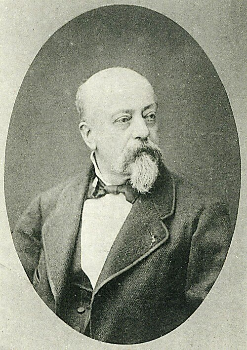
a donné les Oies du frère Philippe, un conte de la Fontaine. C’est un prétexte à jolies femmes, à ombrages, et à tons variés quand même.
gave us The Geese of Brother Philippe, a tale by La Fontaine. It is a pretext for pretty women, shady foliage, and a variety of tones at all costs.
C’est d’un aspect fort attirant, mais c’est le rococo du romantisme. — Il y a là dedans du Couture, un peu du faire de Célestin Nanteuil, beaucoup de tons de Roqueplan et de C. Boulanger. — Réfléchir devant ce tableau combien une peinture excessivement savante et brillante de couleur peut rester froide quand elle manque d’un tempérament particulier.
It is very attractive in appearance, but it is the rococo of Romanticism. — There is some Couture in it, a little of Célestin Nanteuil’s manner, and a great many of the tones of Roqueplan and C. Boulanger. — Standing before this picture, reflect on how a painting excessively learned and brilliant in color can remain cold when it lacks a temperament of its own.
ISABEY
Isabey
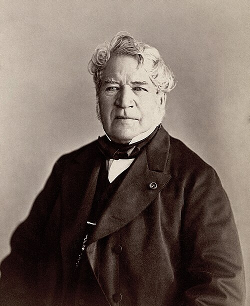
Il y a toujours là-dedans des crocodiles, des oiseaux empaillés, de gros livres de maroquin, du feu dans des fourneaux, et un vieux en robe de chambre, — c’est-à-dire une grande quantité de tons divers. C’est ce qui explique la prédilection de certains coloristes pour un sujet si commun.
There are always crocodiles in these things, stuffed birds, great morocco-bound books, fires burning in furnaces, and an old man in a dressing gown—in other words, a great quantity of different tones. That explains the fondness certain colorists have for so commonplace a subject.
M. Isabey est un vrai coloriste — toujours brillant, — souvent délicat. Ç’a été un des hommes les plus justement heureux du mouvement rénovateur.
M. Isabey is a true colorist—always brilliant, often delicate. He was one of the men most justly favored by the renovating movement.
LÉCURIEUX
Lécurieux
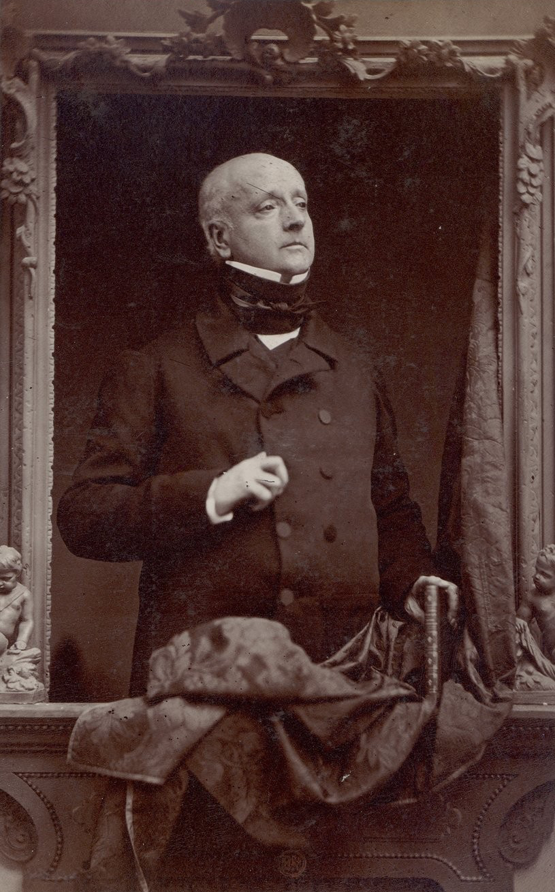
Nous sommes à un théâtre du boulevard qui s’est mis en frais de littérature ; on vient de lever le rideau, tous les acteurs regardent le public.
We are in one of the boulevard theaters that has gone to the expense of literature; the curtain has just risen and all the actors are looking at the audience.
Un seigneur, avec Marion Delorme onduleusement appuyée à son bras, n’écoute pas la complainte du Salomon qui gesticule comme un forcené dans le fond.
A nobleman, with Marion Delorme sinuously leaning on his arm, pays no attention to Solomon’s lament while Solomon gesticulates like a madman in the background.
La mise en scène est bonne ; tous les fous sont pittoresques, aimables, et savent parfaitement leur rôle.
The staging is good; all the madmen are picturesque, amiable, and know their roles perfectly.
Nous ne comprenons pas l’effroi de Marion Delorme à l’aspect de ces aimables fous.
We do not understand Marion Delorme’s terror at the sight of such amiable madmen.
Ce tableau a un aspect uniforme de café au lait. La couleur en est roussâtre comme un vilain temps plein de poussière.
The picture has a uniform café-au-lait appearance. Its color is reddish-brown like ugly weather full of dust.
Le dessin, — dessin de vignette et d’illustration. À quoi bon faire de la peinture dite sérieuse, quand on n’est pas coloriste et qu’on n’est pas dessinateur ?
The drawing—vignette drawing, illustration drawing. What is the use of making so-called serious painting when one is neither a colorist nor a draughtsman?
M me CÉLESTE PENSOTTI
M Me Céleste Pensotti

Le tableau de madame Céleste Pensotti s’appelle Rêverie du soir . Ce tableau, un peu maniéré comme son titre, mais joli comme le nom de l’auteur, est d’un sentiment fort distingué. — Ce sont deux jeunes femmes, l’une appuyée sur l’épaule de l’autre, qui regardent à travers une fenêtre ouverte. — Le vert et le rose, ou plutôt le verdâtre et le rosâtre y sont doucement combinés. Cette jolie composition, malgré ou peut-être à cause de son afféterie naïve d’album romantique, ne nous déplaît pas ; — mais cela a une qualité trop oubliée aujourd’hui. C’est élégant, — cela sent bon.
Madame Céleste Pensotti’s picture is called Evening Reverie. The picture, a little affected like its title but pretty like the artist’s name, is marked by a very distinguished feeling. — Two young women, one leaning on the other’s shoulder, look out through an open window. — Green and pink—or rather greenish and pinkish—are gently combined. This pretty composition, in spite of, or perhaps because of, its naïve affectation of a Romantic album, does not displease us; — it possesses a quality too much forgotten today. It is elegant—it smells sweet.
TASSAERT
Tassaert

Un petit tableau de religion presque galante. — La Vierge allaite l’enfant Jésus — sous une couronne de fleurs et de petits amours. L’année passée nous avions déjà remarqué M. Tassaert. Il y a là une bonne couleur, modérément gaie, unie à beaucoup de goût.
A small religious picture that is almost gallant. — The Virgin suckles the Christ Child beneath a crown of flowers and little cupids. We had already noticed M. Tassaert last year. There is good color here, moderately cheerful, joined to a great deal of taste.
LELEUX frères
Leleux Frères
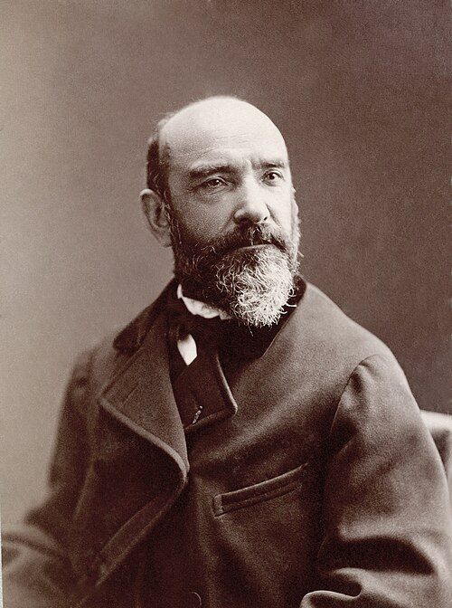

Tous leurs tableaux sont très-bien faits, très-bien peints, et très-monotones comme manière et choix de sujets.
All their pictures are very well made, very well painted, and very monotonous in manner and choice of subject.
LEPOITEVIN
Lepoitevin
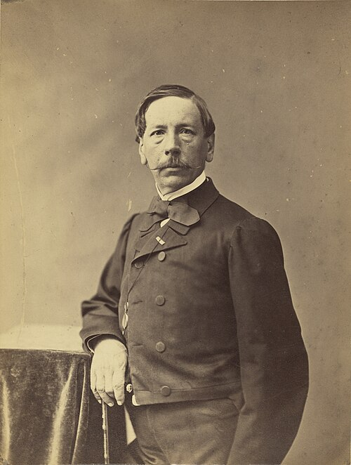
Sujets à la Henri Berthoud (voyez le livret). — Tableaux de genre, vrais tableaux de genre trop bien peints. Du reste, tout le monde aujourd’hui peint trop bien.
Subjects in the manner of Henri Berthoud (see the catalogue). — Genre pictures, true genre pictures, much too well painted. Besides, everyone today paints too well.
GUILLEMIN
Guillemin
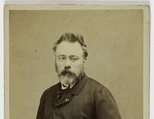
M. Guillemin, qui a certainement du mérite dans l’exécution, dépense trop de talent à soutenir une mauvaise cause ; — la cause de l’esprit en peinture . — J’entends par là envoyer à l’imprimeur du livret des légendes pour le public du dimanche.
M. Guillemin, who certainly has merit in execution, spends too much talent in supporting a bad cause—the cause of wit in painting. — By that I mean sending captions to the printer of the catalogue for the Sunday public.
MULLER
Muller
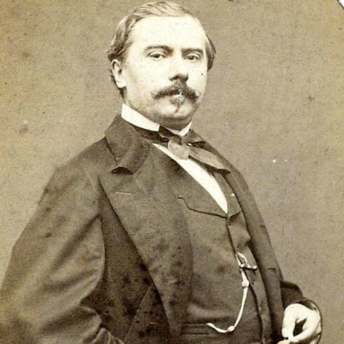
M. Muller croit-il plaire au public du samedi en choisissant ses sujets dans Shakespeare et Victor Hugo ? — De gros amours Empire sous prétexte de sylphes. — Il ne suffit donc pas d’être coloriste pour avoir du goût. — Sa Fanny est mieux.
Does M. Muller think he will please the Saturday public by taking his subjects from Shakespeare and Victor Hugo? — Great Empire-style cupids under the pretext of sylphs. — So being a colorist is not enough to have taste. — His Fanny is better.
DUVAL LECAMUS père
Duval Lecamus Père
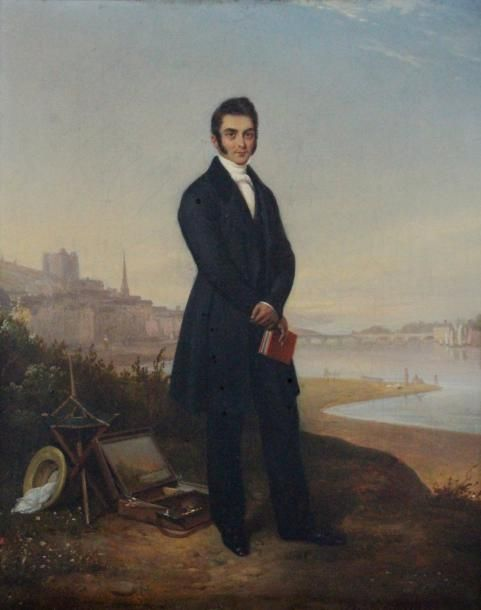
« … Sait d’une voix légère Passer du grave au doux, du plaisant au sévère. »
“…Knows with a light voice / To pass from grave to sweet, from pleasant to severe.”
DUVAL LECAMUS jules
Duval Lecamus Jules
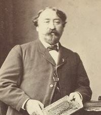
a été imprudent d’aborder un sujet traité déjà par M. Roqueplan.
was imprudent to take on a subject already treated by M. Roqueplan.
GIGOUX
Gigoux
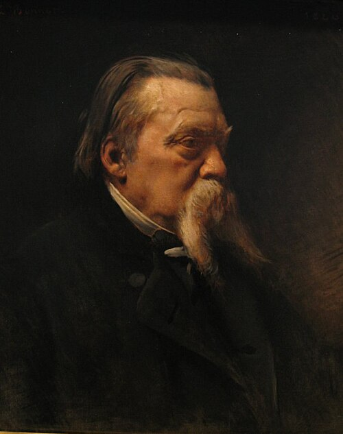
M. Gigoux nous a procuré le plaisir de relire dans le livret le récit de la Mort de Manon Lescaut . Le tableau est mauvais ; pas de style ; mauvaise composition, mauvaise couleur. Il manque de caractère, il manque de son sujet. Quel est ce Des Grieux ? je ne le connais pas.
M. Gigoux has given us the pleasure of rereading in the catalogue the story of The Death of Manon Lescaut. The picture is bad: no style; bad composition, bad color. It lacks character; it lacks its subject. Who is this Des Grieux? I do not know him.
Je ne reconnais pas non plus là M. Gigoux, que la faveur publique faisait, il y a quelques années, marcher de pair avec les plus sérieux novateurs.
Nor do I recognize here the M. Gigoux whom public favor, a few years ago, placed on a level with the most serious innovators.
M. Gigoux, l’auteur du Comte de Cominges , de François I er assistant Léonard de Vinci à ses derniers moments , M. Gigoux du Gil Blas , M. Gigoux est une réputation que chacun a joyeusement soulevée sur ses épaules. Serait-il donc aujourd’hui embarrassé de sa réputation de peintre ?
M. Gigoux, the author of The Comte de Comminges, of Francis I Attending Leonardo da Vinci in His Last Moments, M. Gigoux of Gil Blas—M. Gigoux is a reputation that everyone joyfully lifted onto his shoulders. Has he now become embarrassed by his reputation as a painter?
RUDOLPHE LEHMANN
Rudolphe Lehmann
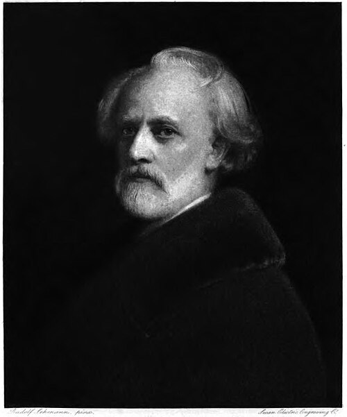
Ses Italiennes de cette année nous font regretter celles de l’année passée.
His Italian Women of this year make us regret those of last year.
DE LA FOULHOUZE
De La Foulhouze

a peint un parc plein de belles dames et d’élégants messieurs, au temps jadis. C’est certainement fort joli, fort élégant, et d’une très-bonne couleur. Le paysage est bien composé. Le tout rappelle beaucoup Diaz ; mais c’est peut-être plus solide.
painted a park full of beautiful ladies and elegant gentlemen in olden times. It is certainly very pretty, very elegant, and of very good color. The landscape is well composed. The whole recalls Diaz strongly, but is perhaps more solid.
PERESSE
Peresse

La saison des roses . — C’est un sujet analogue, — une peinture galante et d’un aspect agréable, qui malheureusement fait songer à Wattier, comme Wattier fait songer à Watteau.
The Season of Roses. — It is a similar subject—a gallant painting with a pleasing appearance which unfortunately makes one think of Wattier, just as Wattier makes one think of Watteau.
DE DREUX
De Dreux
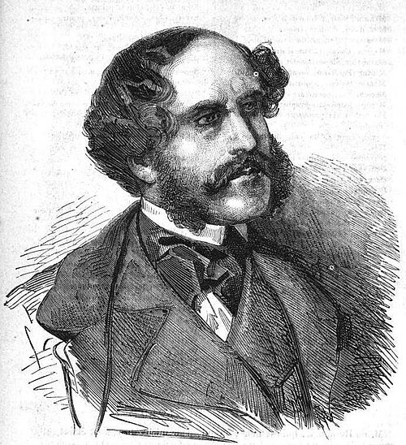
est un peintre de la vie élégante, high life . — Sa Châtelaine est jolie ; mais les Anglais font mieux dans le genre paradoxal. — Ses scènes d’animaux sont bien peintes ; mais les Anglais sont plus spirituels dans ce genre animal et intime.
is a painter of elegant life, of high life. — His Châtelaine is pretty; but the English do better in that paradoxical genre. — His animal scenes are well painted; but the English are wittier in that intimate animal genre.
M me CALAMATTA
M Me Calamatta
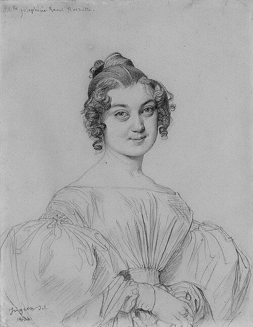
a peint une Femme nue à sa toilette, vue de face, la tête de profil — fond de décoration romaine. L’attitude est belle et bien choisie. En somme, cela est bien fait. Madame Calamatta a fait des progrès. Cela ne manque pas de style, ou plutôt d’une certaine prétention au style.
painted a Nude Woman at Her Toilette, seen from the front, her head in profile—against a Roman decorative background. The pose is beautiful and well chosen. On the whole it is well done. Madame Calamatta has made progress. It does not lack style—or rather, a certain pretension to style.
PAPETY
Papety

promettait beaucoup, dit-on. Son retour d’Italie fut précédé par des éloges imprudents. Dans une toile énorme, où se voyaient trop clairement les habitudes récentes de l’Académie de peinture, M. Papety avait néanmoins trouvé des poses heureuses et quelques motifs de composition ; et malgré sa couleur d’éventail, il y avait tout lieu d’espérer pour l’auteur un avenir sérieux. Depuis lors, il est resté dans la classe secondaire des hommes qui peignent bien et ont des cartons pleins de motifs tout prêts. La couleur de ses deux tableaux ( Memphis. — Un assaut ) est commune. Du reste, ils sont d’un aspect tout différent, ce qui induit à croire que M. Papety n’a pas encore trouvé sa manière.
promised a great deal, we are told. His return from Italy was preceded by imprudent praise. In an enormous canvas, where the recent habits of the Academy of Painting were all too plain, M. Papety nevertheless found some fortunate poses and some motifs of composition; and despite his fan-like color, there was every reason to hope for a serious future for him. Since then he has remained in the secondary class of men who paint well and have portfolios full of ready-made motifs. The color of his two pictures (Memphis — An Assault) is commonplace. Besides, they look entirely different from one another, which leads one to believe that M. Papety has not yet found his manner.
ADRIEN GUIGNET
Adrien Guignet

M. Adrien Guignet a certainement du talent ; il sait composer et arranger. Mais pourquoi donc ce doute perpétuel ? Tantôt Decamps, tantôt Salvator. Cette année, on dirait qu’il a colorié sur papyrus des motifs de sculpture égyptienne ou d’anciennes mosaïques ( les Pharaons ). Cependant Salvator et Decamps, s’ils faisaient Psammenit ou Pharaon, les feraient à la Salvator et à la Decamps. Pourquoi donc M. Guignet… ?
M. Adrien Guignet certainly has talent; he knows how to compose and arrange. But why this perpetual uncertainty? Now Decamps, now Salvator. This year one would say he had colored motifs from Egyptian sculpture or ancient mosaics on papyrus (The Pharaohs). Yet Salvator and Decamps, if they painted Psammenitus or Pharaoh, would paint them in the manner of Salvator and Decamps. Why then M. Guignet…?
MEISSONIER
Meissonier
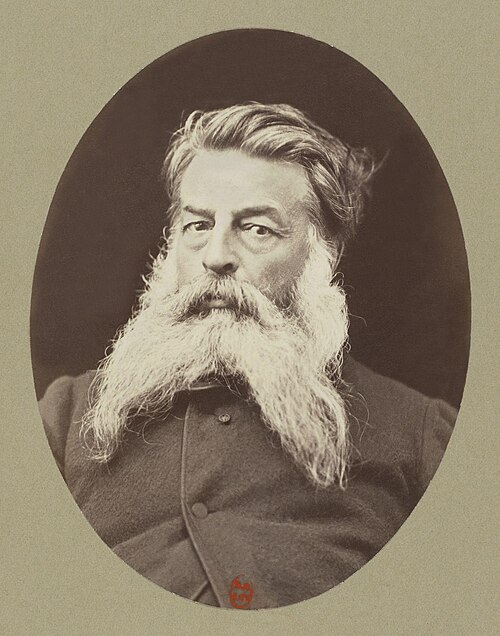
Trois tableaux : Soldats jouant aux dés — Jeune homme feuilletant un carton — Deux buveurs jouant aux cartes.
Three pictures: Soldiers Playing Dice — Young Man Leafing Through a Portfolio — Two Drinkers Playing Cards.
Autres temps, autres mœurs ; autres modes, autres écoles. M. Meissonier nous fait songer malgré nous à M. Martin Drolling. Il y a dans toutes les réputations, même les plus méritées, une foule de petits secrets. — Quand on demandait au célèbre M. X*** ce qu’il avait vu au Salon, il disait n’avoir vu qu’un Meissonier, pour éviter de parler du célèbre M. Y***, qui en disait autant de son côté. Il est donc bon de servir de massue à des rivaux.
Other times, other customs; other fashions, other schools. M. Meissonier makes us think, despite ourselves, of M. Martin Drolling. In every reputation, even the most deserved, there is a crowd of little secrets. — When the celebrated M. X*** was asked what he had seen at the Salon, he said he had seen nothing but a Meissonier, in order to avoid speaking of the celebrated M. Y***, who said the same thing on his side. It is useful, then, to serve as a club against one’s rivals.
En somme, M. Meissonier exécute admirablement ses petites figures. C’est un Flamand moins la fantaisie, le charme, la couleur et la naïveté — et la pipe !
On the whole, M. Meissonier executes his little figures admirably. He is a Fleming minus fantasy, charm, color, naïveté—and the pipe!
JACQUAND
Jacquand
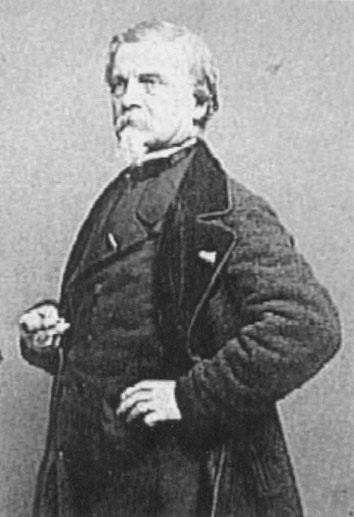
fabrique toujours du Delaroche, vingtième qualité.
continues manufacturing Delaroche, twentieth quality.
ROEHN
Roehn

Peinture aimable (argot de marchand de tableaux).
Pleasant painting (picture-dealer’s slang).
RÉMOND
Rémond
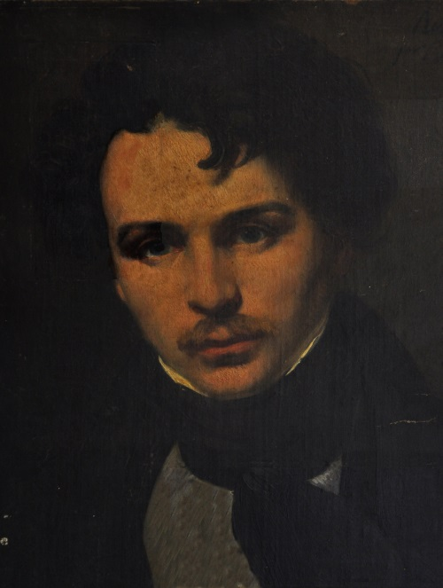
Jeune école de dix-huit cent vingt.
Young school of eighteen-twenty.
HENRI SCHEFFER
Henri Scheffer
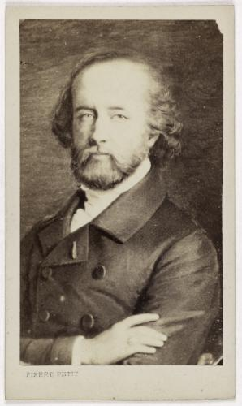
Auprès de Madame Roland allant au supplice , la Charlotte Corday est une œuvre pleine de témérité. (Voir aux portraits).
Beside Madame Roland Going to the Scaffold, Charlotte Corday is a work full of temerity. (See under Portraits.)
HORNUNG
Hornung
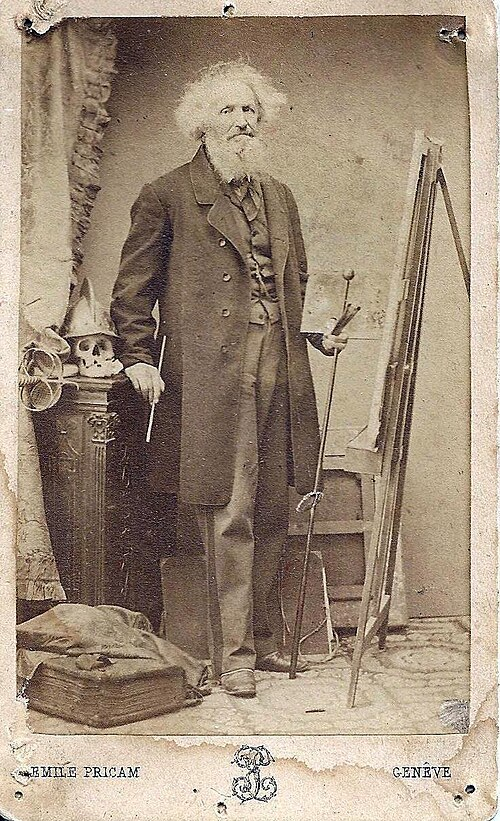
« Le plus têtu des trois n’est pas celui qu’on pense. »
“The most stubborn of the three is not the one you think.”
BARD
Bard

Voir le précédent.
See the preceding.
GEFFROY
Geffroy
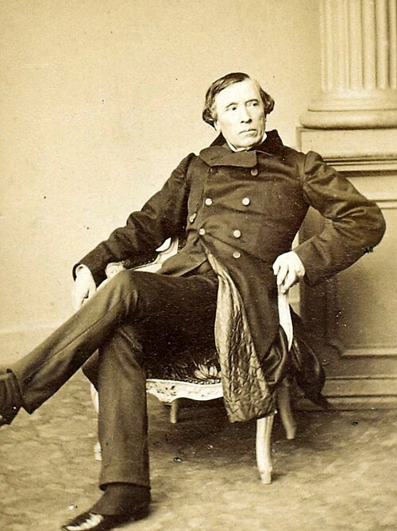
Voir le précédent.
See the preceding.